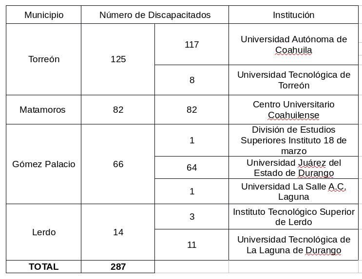
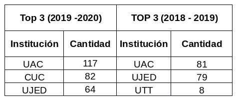

De acuerdo con el Anuario Estadístico de la Asociación Nacional de Universidades e Instituciones de Educación Superior (ANUIES) correspondiente al ciclo escolar 2019 -2020, la Zona Metropolitana de La Laguna (ZML) tiene un total de 62 instituciones de educación superior, 40 en Torreón, 3 en Matamoros, 12 en Gómez Palacio y 7 en Lerdo. De las cuales 47 son instituciones privadas, y representan el 29% sobre la matrícula de la ZML. El total de las instituciones considerando privadas y públicas, registran una cantidad de 51,394 matriculados, generando un incremento del 5% con respecto al ciclo 2018 -2019. El matriculado está conformado por 49% mujeres y 51% hombres. Específicamente de los 8,007 egresados, 51% son mujeres y 49% hombres. De los 6,811 titulados 48% son mujeres y 52% son hombres.
| . | Variación | 2019 - 2020 | 2018 -2019 |
|---|---|---|---|
| Matrícula Total | 5% | 51394 | 48803 |
| Matrícula Mujeres | 6% | 25356 | 23837 |
| Matrícula Hombres | 4% | 26038 | 24966 |
| Egresados Total | 5% | 8007 | 7659 |
| Egresados Mujeres | 11% | 4066 | 3671 |
| Egresados Hombres | -1% | 3941 | 3988 |
| Titulados Total | -3% | 6811 | 7033 |
| Titulados Mujeres | 4% | 3285 | 3159 |
| Titulados Hombres | -9% | 3526 | 3874 |
Se registró un incremento del 5% en la cantidad de egresados, y a su vez la cantidad de mujeres egresadas aumentó un 11%. En el tema de los titulados, esta cifra presentó una disminución del 3%, viéndose afectada la cantidad de hombres, la cual reflejó una variación de -9%, por el contrario 4% más mujeres se titularon.
Las principales 5 instituciones de Educación Superior por número de matriculados son: Universidad Autónoma de Coahuila, Instituto Tecnológico de La Laguna, Instituto Tecnológico Superior de Lerdo, Universidad Tecnológica de Torreón y Universidad Juárez del Estado de Durango. Éstas conforman el 53% sobre el total de matriculados en la ZML con 27,021 registradas.
| . | Matrícula Total | Matrícula Mujeres | Matrícula Hombres | Egresados Total | Titulados Total |
|---|---|---|---|---|---|
| UNIVERSIDAD AUTÓNOMA DE COAHUILA | 10,605 | 5,976 | 4,629 | 1,309 | 1,088 |
| INSTITUTO TECNOLÓGICO DE LA LAGUNA | 5,682 | 2,042 | 3,640 | 817 | 1,052 |
| INSTITUTO TECNOLÓGICO SUPERIOR DE LERDO | 3,702 | 1,028 | 2,674 | 1,104 | 1,104 |
| UNIVERSIDAD TECNOLÓGICA DE TORREÓN | 3,627 | 1,000 | 2,627 | 383 | 413 |
| UNIVERSIDAD JUÁREZ DEL ESTADO DE DURANGO | 3,405 | 1,758 | 1,647 | 559 | 494 |
En el ciclo escolar 2018 -2019 se registraron 179 matrículas de discapacitados, para el ciclo 2019- 2020 hubo un incremento del 60%. Torreón con 125, Matamoros con 82, Gómez Palacio con 66 y Lerdo con 14.

Son 8 las instituciones de educación superior que registran matrículas de discapacitados, una más a diferencia del ciclo 2018 -2019, en ese ciclo, específicamente en el municipio de Matamoros ninguna institución de educación superior registró matrículas con estas características. Ahora en el 2019 – 2020 la institución que se agrega en la lista se ubica en dicho municipio, generando un incremento en el número de matrículas de discapacitados.
Principales universidades con discapacitados.
| Institución | Municipio | Matrícula Discapacitados % 2019 -2020 | Matrícula Discapacitados % 2018 -2019 |
|---|---|---|---|
| UAC | Torreón | 41% | 45% |
| CUC | Matamoros | 29% | 0% |
| UJED | Gómez Palacio | 22% | 44% |
El top 3 de instituciones de educación superior con matrículas de discapacitados se vio modificado.
En 2018 - 2019 se conformaba por la Universidad Autónoma de Coahuila en primer lugar, la Universidad Juárez del Estado de Durango en segundo lugar y en tercer lugar la Universidad Tecnológica de Torreón. Es importante resaltar el incremento de porcentaje que ocupa el tercer lugar del listado, es decir, en 2018 -2019 la UTT presentaba un 4%, 18% menos a diferencia del tercer lugar del ciclo 2019 – 2020, ocupado por la Universidad Juárez del Estado de Durango.

En la tabla anterior se muestra el listado de ambos ciclos, en este caso el comparativo se realiza en base a la cantidad de alumnos por institución. Mostrando el incremento de alumnos en las principales instituciones de educación superior con estas características.
Además del comparativo con el ciclo anterior, es importante visualizar el alcance que presentan las propias instituciones de manera individual, por ello se desarrolló la siguiente tabla con el porcentaje de matrículas de discapacitados sobre la matrícula total de cada institución.
| 2019 - 2020 | Matrícula Discapacitados | % sobre matrícula total |
|---|---|---|
| UNIVERSIDAD AUTÓNOMA DE COAHUILA | 117 | 2% |
| CENTRO UNIVERSITARIO COAHUILENSE | 82 | 17% |
| UNIVERSIDAD JUÁREZ DEL ESTADO DE DURANGO | 64 | 4% |
| UNIVERSIDAD TECNOLÓGICA DE LA LAGUNA DURANGO | 11 | 2% |
| UNIVERSIDAD TECNOLÓGICA DE TORREÓN | 8 | 1% |
| INSTITUTO TECNOLÓGICO SUPERIOR DE LERDO | 3 | 0.48% |
| DIVISIÓN DE ESTUDIOS SUPERIORES INSTITUTO 18 DE MARZO | 1 | 0.15% |
| UNIVERSIDAD LA SALLE, A.C. - LAGUNA | 1 | 1% |
La cantidad de estudiantes con discapacidad ha ido aumentando, paralelo a las instituciones que presentan alumnos con estas características. Las instituciones que conforman el top 5 por número de matrículas generales en la Zona Metropolitana de la Laguna, también forman parte del grupo de universidades que cuentan con matrículas de discapacitados, a excepción del Instituto Tecnológico de La Laguna (Torreón, Coahuila).